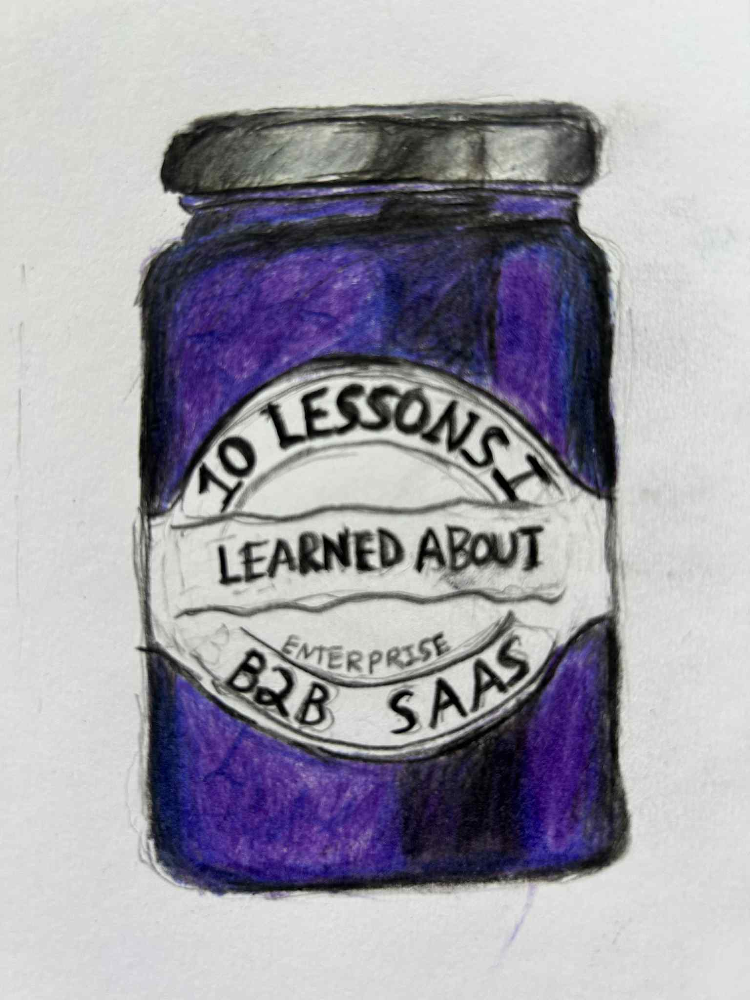
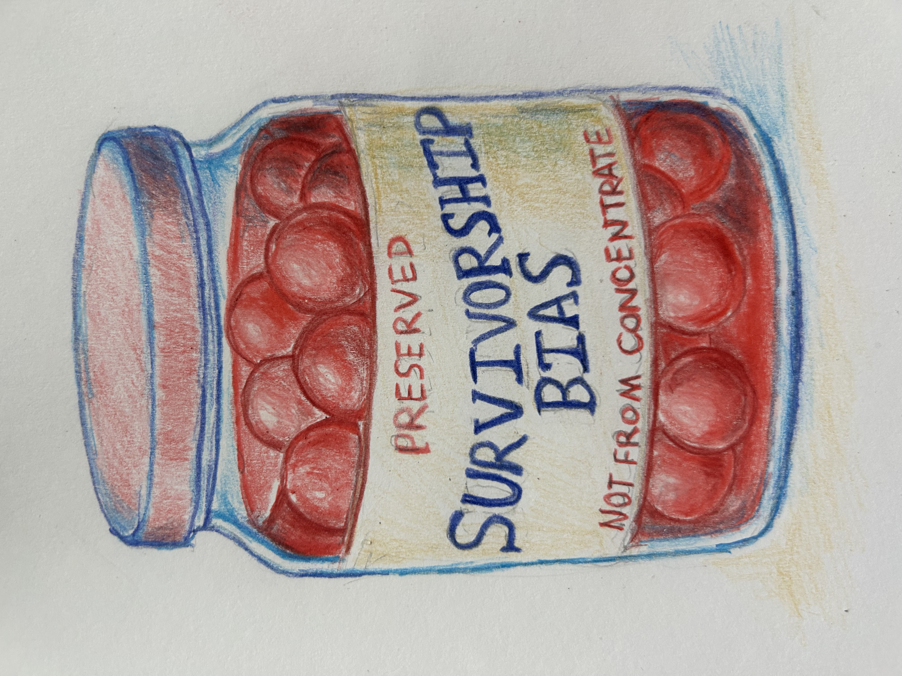

It’s fall again on the East Coast which brings about the kind of wistfulness that makes tech-bros write blog posts or start podcasts. Because nothing gold can stay. Unless of course you preserve it in jars. Packaged up with neat labels like “meditations on turning 30” or “5 things I learned about product management from my ayahuasca retreat”.
Anyways. You’re here. Sit down and have a spoonful.
Here’s 3 tips on how to be more lucky.

Be more extroverted
The cliche story of how people start with being lucky is being in the right place at the right time. What people don’t tell you is that you can find the right place and just kind of hang out there all day.
Studies show that extraversion predicts well being more than any other trait. But extraversion is a muscle. Every time I’ve felt the need for more luck, my best trick was to force myself to be more extroverted than I’m comfortable with.
Go to the event when you want to stay in. Make the phone call. Organize the thing. Do it past the point where it feels energizing, because let’s be real, staying inside and vegetating is the easy way out.
So many of the greatest things that happened to me came on nights where I forced myself to venture out even though I wanted to stay in. My first company started from a drunk idea at a networking event. Four beers deep, I told a stranger, now an old friend, about my idea for using AI to automate dating apps. My second company started when I ran into an old friend at a consumer networking event and decided to work together. Both happened on nights when I really wanted to stay in.
When you put energy into the universe it has a way of giving back.

Be in the right place
If you’re young and ambitious you should probably be in SF or NYC. LA is allowed if you’re in film. Denver if you’re deeply outdoorsy. Miami if you’re a sex worker.
Nomading can add a lot to your life, but generally up to a point. A friend of mine found god in bachata and Latina Tinder so I’ll give him Mexico City.
Texas or SoCal are good places to go when you’re ready to settle down and die.
The point is you only get to live once, and your odds of doing something interesting go up dramatically. This is the usual argument for going to a good college or buying a one-way ticket to San Francisco.
Five years later the friends you were slumming it with start to see real success and you would feel like such an asshole if you didn’t try to keep up.
The people who repeat “it’s not what you know it’s who you know” are inevitably the most insufferable people in the room, but they kinda were onto something. Thankfully by 30 nobody invites them anymore.
If nothing else luck feels meteorological. Like snow landing on your shoulder or a butterfly on your hand. If you just go about your day it’s bound to happen eventually. But you can also make your way to someplace where the sky is filled with it and hold out both your arms.
Roll more dice
The usual cope answer for not doing something hard is that the odds are terrible. Nine in ten startups fail and 88% of creative endeavors don’t make it past the Etsy store stage. But roll the dice a few more times and your odds start to approach 50/50.
I attempted my first startup at 25. Made my first $1 at 28. Enough to replace my job at 30. Along the way were about a dozen ideas that went nowhere.
Over the arc of your life the biggest factors here are speed and persistence.
Lack of persistence eats the most dreams. Too many people never quite bother to try or get in their own way long enough that their feet get tangled.
Speed matters almost as much. If you write 10 novels while someone else writes one, your odds of succeeding are a lot higher. People are famously bad at predicting what will resonate with an audience, be it a book or a product. Speed translates into feedback. You act and the world responds. Most of the time you’ll get cold indifference, but keep trying and eventually you feel a tug.
The last element is sustainability. How many swings can you take before it kills you? Bet the farm on a single project and you’re done in one go. Quit your job with 3 months of runway and you’ll have a short window before panic overpowers productivity. There are ways around this. Cut down your burn. Build within constraints. For all the problems of the internet the cost of capital for ambition is lower than ever.
Footnotes
1. Obligatory disclaimer to salt your blog posts before consuming. If you add up all the advice published on the internet it roughly averages out to zero. Slate Star Codex has a beautiful piece titled “Should you reverse any advice you hear”. For every blog post like mine that broadly says “move to a big city and try a thousand different things” there will be one that says “maintain maniacal focus on a single grand goal.” So buyer beware. Unless you’re just reading this for the doodles and the footnotes, in which case carry on. ↩
2. Source: I made it up. There’s no great numbers for either of these stats, but you broadly get the idea. ↩
3. Some fields have better odds than others but I’m old enough that I’ve seen childhood friends make a comfortable living as: ↩
- Startup founders
- TikTok influencers
- Photographers
- Matchmakers
- Bloggers
- Career coaches